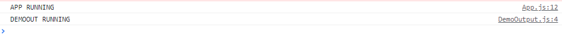

How React really work?
這章節將進一步介紹 React 底層的運作方式，透過了解這些觀念，有助於我們更正確的使用 React 來開發專案
How React really work?
在透過 create-react-app 建立 React 專案時，預設會安裝兩個與 React 有關的套件，分別是 React 核心 react 與 react-dom，在 react 核心中，其實並不會直接處理 DOM 相關內容，更直接的說法是不會案瀏覽器之間有互動，react 核心只負責處理 react 開發時的基本單位 - Components，而 Components 會處理所有資寮來源，如下圖所示:
graph TD; A["Props: Data from parent component"] --> D[Components]; B["Context: Component-wide data"] --> D[Components]; C["State: Internal data"] --> D[Components]; D[Components] --> E["Real DOM: What the use sees"]
- Props: 來自父元件的資料
- Context: Component 共用的資料
- State: Component 內部的資料
而在 react 核心處理完 Components 資料時，每當有資料上的更新，就會產生重新執行 component function，產生 React Virtual DOM，並比對更新前後的差異，再由 react-dom 來更新實際 DOM 不同之處;因為更新實際 DOM 的效能成本是很高的，因此先由比對 React Virtual DOM 的差異，再更新實際 DOM 必要之處，就可以進可能的減少效能上的消耗，所以重新執行 component function 並不等於重新選染 DOM
flowchart TB subgraph Components a1["Re-evaluated whenever props, state or context changes"] a2["React executes component functions"] end subgraph Real-DOM b1["Changes to the real DOM are only made for differences between evaluations"] end Components --> Real-DOM
Child Component Re-evaluation
前面提到，當 component 關聯的資料發生異動時，component function 都會被再次呼叫，return 中的 JSX 也會再次被回傳，這代表其中的 child component 也會再次呼叫 component function，一個簡單的範例如下，透過 parent component State 來控制 child component 的存在與否
1 | // App.js |

這樣的範例可能會很直覺地認為因為 child component 所 props 的 State 發生異動，所以 child component function 自然也會再次呼叫，但當我們將這個 props 改成固定值，也就是無論 parent component State 如何變動，child component 的值也不受影響
1 | // App.js |
結果仍然會發現，child component 即使值未受影響，component function 依然被呼叫了! 因為當 component 因資料異動所觸發的 re-evaluation，其 JSX 中的 child component 也是這個 component 的一部分，自然也會跟著再次呼叫，這裡就指出了一個問題，如果在上層有太多非必要的資料異動，勢必會接連帶動與資料無關的 child component 發生 re-evaluation，進而造成效能上的浪費。
Preventing Unnecessary Re-Evaluation with React.memo()
為了解決上述的問題，React 提供了一個方法 - React.memo() 來解決這個問題，只需要在非必要 re-render child component 內的 export 中，透過 React.memo() 回傳 component function，就可以避免這種情況發生
1 | import React from "react"; |
使用時機
既然這個方法可以避免因非必要的呼叫所造成的效能消耗，那為什麼我們不在所有 child component 這麼使用呢 ? 因為這個方法其實也有他的效能成本，為了比較資料是否有變動，勢必就要儲存舊的資料，所以如果這個 component 無論什麼情況都會發生 re-evaluation，那這麼做就只是造成多餘的效能消耗而已了。
使用限制
除此之外，React.memo() 還有另一個使用上的限制，同樣的方法套用到另一個資料也沒有改動的 component Button 中，會發現 component function 還是被執行了
1 | import React from "react"; |
原因其實不在於 React 的特性，而是在於 React.memo() 其實是單純比較資料新舊值是否相同，可以看成透過 === 來判斷新舊值，而在原生 JavaScript 中，只有 primitive type 可以被這樣比較，其餘 object type 如 function、array or object 無論值是否相同，都因為 by reference 的特性而指向不同的 object，所以每次的 toggleParagraphHandler function 其實是相同行為的”不同” function。
Preventing Function Re-Creation with useCallback()
很顯然的，根據原生 JavaScript 的特性，要解決這個問題，只能從 object 資料的來源來著手，讓這筆 object 資料不被重新生成，而是始終指向同一個 object，為了達到這個目的，React 提供了一個 hook - useCallback() 來解決這個問題，其用法就和 useEffect() 一樣，第一個參數就是要執行的 function，第二個參數是一個 dependency array，array 中的參數就是執行時機的依據
1 | import React, { useState, useCallback } from "react"; |
同 useEffect()，因為 function 中只有一個 setShowParagraph()，React 辯護自動將其當成 dependency，所以不必在 dependency array 中帶入。
useCallback() and its Dependencies
那麼什麼時候會需要把變數加入 dependency array 之中呢 ?
一個範例如下，新增一個按鈕，並透過這個按鈕控制一個 State 來掌握原先的按鈕是否能執行
1 | import React, { useState, useCallback } from "react"; |
在 dependency array 為空時，會發現無論怎麼點選 Allow Toggling 這個按鈕，Toggle ParaGraph 都不會發生作用，原因是我們透過 useCallback() 來阻止資料發生變異時，執行 component function 所重新生成的的動作，而在 JavaScript 中，function 執行時會產生一個 closure，在這裡因為 toggleParagraphHandler 沒有被重新生成，所以其中的 allowToggle 始終為原始的值，在這種情況就需要透過加入 dependency array 主動告訴 React 這個值需要被更新。
1 | const toggleParagraphHandler = useCallback(() => { |
資料參考
React - The Complete Guide (Incl Hooks, React Router, Redux)
Your Guide to React.useCallback()